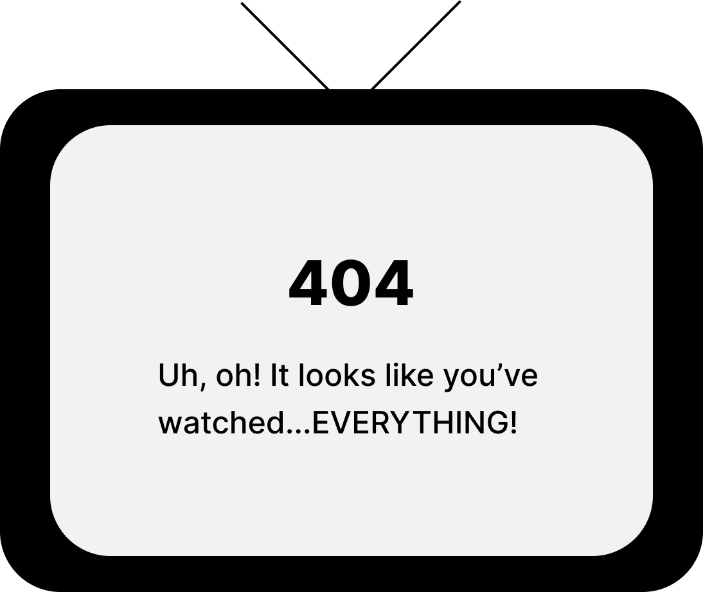
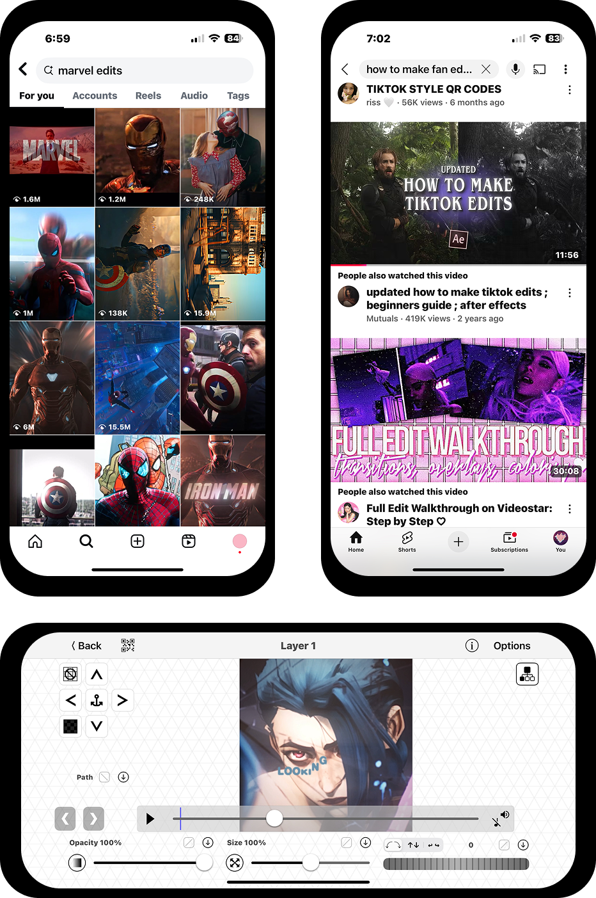
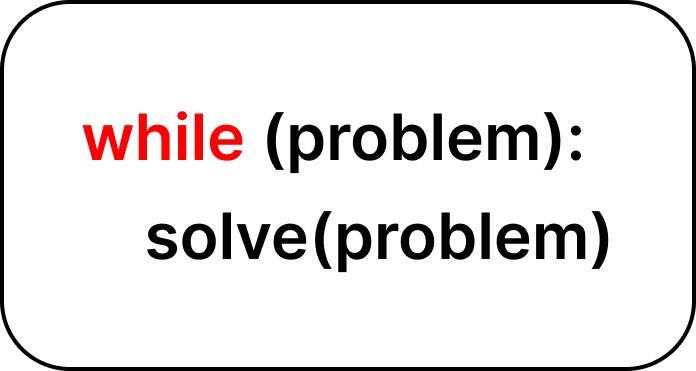
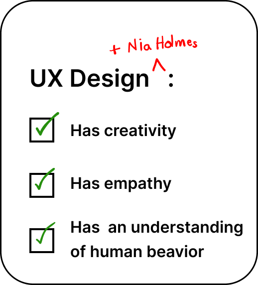

I'm currently a junior at the University of Michigan in the School of Information studying UX design. But how did I decide on UX design?


As a movie and TV enthusiast, I had nearly run out of things to watch during the pandemic and was searching for something new to occupy my time.

I stumbled across a fan edit on Instagram. It featured one of my favorite characters and was filled with creative effects and transitions. Instantly hooked, I dove into YouTube tutorials, created my own fan page, and started experimenting with Video Star, a mobile editing app. That was the moment I realized how much I loved blending creativity and technology to express my interest in entertainment, and connect with others.
When I started college, I (for some odd reason) didn't even consider design or video editing. I instead leaned toward psychology. My first psychology class was really interesting. I enjoyed learning about human behavior and the way the brain works, but ultimately I needed something more hands-on. Choosing to step away from psychology, however, was scary since I've always liked having a clear plan.
My dad encouraged me to try programming, so I enrolled in SI 101. In that very first lecture, my professor said something that stuck with me: “Engineers assume users are logical, but in the School of Information, we understand that human behavior is complex, and we design for that complexity.” This idea lit a spark and guided me to UX design.

Of course, learning to code has not been easy for me. I've encountered my share of frustrating errors, but problem-solving has always been part of who I am. Throughout my life—whether it was troubleshooting unexpected challenges during a work shift, or helping friends and family navigate tricky situations—I found genuine satisfaction in finding quick, effective solutions.

I do appreciate that UX design isn't focused on programming. It's a field that values creativity, empathy, and an understanding of human behavior—my true strengths. I know that my growing coding skills will only enhance my ability to collaborate with developers and bring thoughtful, user-centered solutions to life.